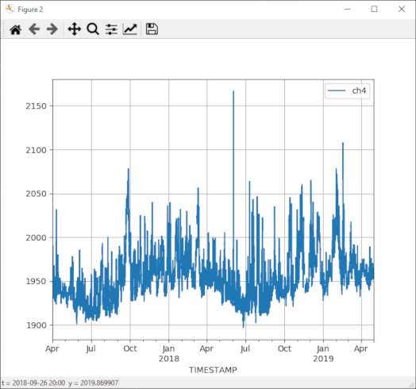
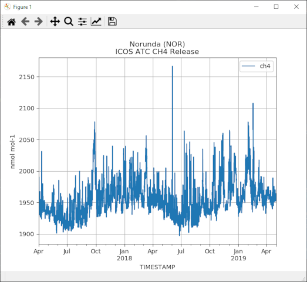

Examples
The following paragraphs explain how to use the library in worked examples. If you would like to run the library live and play around with data sets without installation: We have a public Jupyter Hub running Python3 notebooks, where the library is preinstalled. The examples from this page are available in the folder pylib_examples
https://exploredata.icos-cp.eu/
user: name@organisation
password: get in touch to get the password
Digital Object
For the example below, we assume that you know how to get hold of the PID/URI used at the Carbon Portal. You can read more about this in the Modules section. Each object in the data portal has a unique and persistent identification in form of an URI. The following examples will use the URI
https://meta.icos-cp.eu/objects/lNJPHqvsMuTAh-3DOvJejgYc
ICOS Atmosphere Level 2 data, Norunda, release 2019-1. Go to the landing page to find more information about this data set.
Data Object
from icoscp.cpb.dobj import Dobj
dobj = Dobj('https://meta.icos-cp.eu/objects/lNJPHqvsMuTAh-3DOvJejgYc')
Information (meta data) is automatically stored in the data frames with the object, accessible with Dobj.info command. More about the content of info and other attributes are in the modules section. For example to list all the columns available in the data set:
dobj.colNames
| Column Name | |
|---|---|
| 0 | Flag |
| 1 | NbPoints |
| 2 | Stdev |
| 3 | TIMESTAMP |
| 4 | ch4 |
or get the citation string for this object:
dobj.citation
"ICOS RI, 2019. ICOS ATC CH4 Release, Norunda (59.0 m), 2017-04-01–2019-04-30, https://hdl.handle.net/11676/lNJPHqvsMuTAh-3DOvJejgYc"
DataFrame
Extracting the data as pandas data frame:
from icoscp.cpb.dobj import Dobj
uri = 'https://meta.icos-cp.eu/objects/lNJPHqvsMuTAh-3DOvJejgYc'
do = Dobj(uri)
if do.valid:
display(do.data.head())
else:
print('no preview data available')
Printing the first 10 rows of the data (data.head(10)) should yield the following table:
| id | Flag | NbPoints | Stdev | TIMESTAMP | ch4 |
|---|---|---|---|---|---|
| 0 | N | 0 | -9.990 | 2017-04-01 00:00:00 | NaN |
| 1 | N | 0 | -9.990 | 2017-04-01 01:00:00 | NaN |
| 2 | O | 9 | 0.079 | 2017-04-01 02:00:00 | 1948.660034 |
| 3 | O | 16 | 1.070 | 2017-04-01 03:00:00 | 1950.900024 |
| 4 | O | 17 | 0.817 | 2017-04-01 04:00:00 | 1953.229980 |
| 5 | O | 16 | 0.271 | 2017-04-01 05:00:00 | 1956.319946 |
| 6 | O | 16 | 0.590 | 2017-04-01 06:00:00 | 1957.810059 |
| 7 | O | 16 | 0.736 | 2017-04-01 07:00:00 | 1960.550049 |
| 8 | O | 16 | 0.429 | 2017-04-01 08:00:00 | 1962.540039 |
| 9 | O | 17 | 0.861 | 2017-04-01 09:00:00 | 1965.349976 |
Since version 0.1.3 a simplified access to the data is possible with:
do.data
So instead of data = do.get() to 'extract' the pandas data frame you can directly use the data frame to print the first 10 rows, which will give you the same result as above:
do.data.head(10)
Minimalistic Plot
This first example shows how to extract a data file and create a plot. It is the easiest way to load the data into a Pandas DataFrame in your Python environment. The DataFrame contains the following columNames: Flag, NbPoints, Stdev, TIMESTAMP, ch4. Let's load the data and create a plot for measured methane concentrations over time.
import matplotlib.pyplot as plt
from icoscp.cpb.dobj import Dobj
dobj = Dobj('https://meta.icos-cp.eu/objects/lNJPHqvsMuTAh-3DOvJejgYc')
dobj.data.plot(x='TIMESTAMP', y='ch4', grid=True)
plt.show()

Plot with Title and Units
To get a useful plot, at least we should have a title and the unit of measurement is absolutely paramount:
import matplotlib.pyplot as plt
from icoscp.cpb.dobj import Dobj
dobj = Dobj('https://meta.icos-cp.eu/objects/lNJPHqvsMuTAh-3DOvJejgYc')
dobj.get()
# extract information from the dobj meta data
# look at dobj.info() for a full list
unit = dobj.info[1].unit[dobj.info[1]['colName'] =='ch4'].values[0]
title = dobj.info[0].specLabel[0]
title = dobj.info[2].stationName[0] + ' (' + dobj.info[2].stationId[0] + ')'
title = title + '\n' + dobj.info[0].specLabel[0]
plot = dobj.data.plot(x='TIMESTAMP', y='ch4', grid=True, title=title)
plot.set(ylabel=unit)
plt.show()

Stations
Station Id's
The function to get the station id's might be something you will use a lot. Based on a station id you can get all the dobj id's (PID/URI) and hence access to the data. So if you have no idea whatsoever what stations are available, you came to the right place:
from icoscp.station import station
stationList = station.getIdlist() # returns a Pandas DataFrame
stationList.columns # what information do we get back?
['uri', 'id', 'name', 'country', 'lat', 'lon', 'elevation', 'project','theme']
stationList.head(5)
| uri | id | name | ... | project | theme |
|---|---|---|---|---|---|
| ... | SE-Sto | Abisko-Stordalen Palsa Bog | ... | ICOS | ES |
| ... | IT-Noe | Arca di Noe - Le Prigionette | ... | ICOS | ES |
| ... | UK-AMo | Auchencorth Moss | ... | ICOS | ES |
| ... | FR-Aur | Aurade | ... | ICOS | ES |
| ... | 11BE | BE-SOOP-Belgica | ... | ICOS | OS |
Now you have basic information about a station, but most important you got the station id as well. NOTE: to create a station object you need to provide the station id as is CaseSensitiv
A station Object
Let's create a station object and have a look what information is provided with the function .info() . Each entry from "info" is an attribute and can be extracted with "myStation.attribute". In the following example you can access the station name with myStation.name
from icoscp.station import station
myStation = station.get('SE-Nor')
myStation.info()
{
'stationId': 'SE-Nor',
'name': 'Norunda',
'theme': 'ES',
'icosclass': '2',
'siteType': 'Forest',
'lat': 60.0865,
'lon': 17.4795,
'eas': None,
'eag': '36',
'firstName': 'Meelis',
'lastName': 'Mölder',
'email': 'meelis.molder@nateko.lu.se',
'country': 'SE',
'project': ['ICOS'],
'uri': ['http://meta.icos-cp.eu/resources/stations/ES_SE-Nor']}
myStation.products() # return DataFrame with all products available from this station
| id | specification |
|---|---|
| 0 | Drought 2018 Archive Product |
| 1 | Ecosystem meteo time series (ICOS Sweden) |
| 2 | Ecosystem fluxes time series (ICOS Sweden) |
| 3 | Ecosystem eco time series (ICOS Sweden) |
| 4 | Drought 2018 FLUXNET Product |
| 5 | ICOS ETC Archive Product |
| 6 | ICOS ETC FLUXNET Product |
All the dobj URI's (ultimately containing the data itself) can be retrieved with "myStation.data()"
let see what columns are provided. The most important information will be the 'dobj' column. This contains the link to the data and can be used to extract the data.
from icoscp.station import station
myStation = station.get('SE-Nor')
myStation.data().columns
['station', 'dobj', 'spec', 'timeStart', 'timeEnd', 'specLabel','samplingheight', 'datalevel', 'bytes']
myStation.data(level='2') # return a DataFrame with Level 2 data objects for the station
| station | dobj | spec |
|---|---|---|
| ...stations/ES_SE-Nor | https://meta.icos-cp.eu/objects/KfJjYyksI2nxCiJU36UfYVY_ | .../dought2018ArchiveProduct |
| ...stations/ES_SE-Nor | https://meta.icos-cp.eu/objects/L-in6TpOcGjmXruwi3ESD9G2 | .../drought2018FluxnetProduct |
| ...stations/ES_SE-Nor | https://meta.icos-cp.eu/objects/mBPKiB9tIQZQGrsy8ehAinvz | .../etcArchiveProduct |
| ...stations/ES_SE-Nor | https://meta.icos-cp.eu/objects/XA_Ifq7BKqS0tkQd4dGVEFnM | .../etcFluxnetProduct |
This is not the full output, just an excerpt..... most important is the dobj column. You can use the content of the column 'dobj' to extract data. Now we put everything together
from icoscp.cpb.dobj import Dobj
from icoscp.station import station
myStation = station.get('SE-Nor')
myDobj = Dobj(myStation.data().dobj[1]) # this would be the second record from above table (drought2018FluxnetProduct)
data = myDobj.get()
data.columns
['GPP_DT_VUT_REF', 'GPP_NT_VUT_REF', 'H_F_MDS', 'H_F_MDS_QC', 'LE_F_MDS','LE_F_MDS_QC', 'NEE_VUT_REF', 'NEE_VUT_REF_QC', 'RECO_DT_VUT_REF','RECO_NT_VUT_REF', 'SW_IN_F', 'SW_IN_F_QC', 'TA_F', 'TA_F_QC','TIMESTAMP', 'TIMESTAMP_END', 'VPD_F', 'VPD_F_QC']
List of Stations
There is a built in function to extract a list of stations. Be aware that if you extract all ICOS stations, a lot of information is gathered and retrieved. At the time of writing there are over a 100 stations and in can take up to a minute to extract all.
from icoscp.station import station
icosStations = station.getList()
for s in icosStations:
print(s.stationId, s.name, s.lat, s.lon)
SE-Sto Abisko-Stordalen Palsa Bog 68.35596 19.04521
IT-Noe Arca di Noe - Le Prigionette 40.60617 8.15117
UK-AMo Auchencorth Moss 55.7925 -3.24362
FR-Aur Aurade 43.54965 1.106103
...
Collections
Find a collection
from icoscp.collection import collection
collection.getIdList()
Output is a pandas data frame, where each row contains information about a collection. The column collection or doi can be used to create a collection representation. The column dobj contains a list of all associated digital objects (the data) and the column count tells you how many data files are associated.
| collection | doi | title | description | dobj | count |
|---|---|---|---|---|---|
| https://meta.icos-cp.eu/collections/WM5ShdLFqP... | 10.18160/P7E9-EKEA | Ambient atmospheric methane observations from ... | This dataset for historic ambient CH4 mole fra... | [https://meta.icos-cp.eu/objects/pWqX-lRUsilS_... | 30 |
Create a collection representation
with the information from above, you can use either the collection or doi to initialize a collection representation and print some information. Have a look at Modules / collection for a full list of attributes.
myCollection = collection.get('10.18160/ry7n-3r04')
myCollection.info()
{'id': 'https://meta.icos-cp.eu/collections/n7cIMHIyqHJKBeF_3jjgptHP', 'doi': '10.18160/ry7n-3r04', 'citation': 'Ramonet, M. (2019). ICOS Atmosphere Level 2 data, Puy de Dome, release 2019-1 (1.0). ICOS ERIC- Carbon Portal. https://doi.org/10.18160/RY7N-3R04\n', 'title': 'ICOS Atmosphere Level 2 data, Puy de Dome, release 2019-1', 'description': 'ICOS Atmospheric Greenhouse Gas Mole Fractions of CO2, CH4, CO and Meteorological Observations, period 2016-08-25 to 2019-04-30, Puy de Dome, final quality controlled Level 2 data, release 2019-1'}
A more in depth example and how to plot data from the collection can be found on https://exploredata.icos-cp.eu